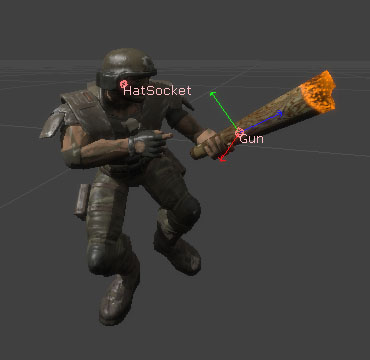

UDN
Search public documentation:
SkeletalMeshSockets
日本語訳
中国翻译
한국어
Interested in the Unreal Engine?
Visit the Unreal Technology site.
Looking for jobs and company info?
Check out the Epic games site.
Questions about support via UDN?
Contact the UDN Staff
中国翻译
한국어
Interested in the Unreal Engine?
Visit the Unreal Technology site.
Looking for jobs and company info?
Check out the Epic games site.
Questions about support via UDN?
Contact the UDN Staff
UE3 Home > Skeletal Meshes > Skeletal Mesh Sockets
Skeletal Mesh Sockets
Document Summary: Tutorial on adding named Sockets to a Skeletal Mesh, which can be used in-game for attaching other objects. Document Changelog: Created by James Golding.
Overview
Commonly in games you will want to attach an object to the bone of a character. This might be a weapon attached to a hand, or a hat attached to the head. Unreal Engine 3 allows you to create sockets in the AnimSet Editor which are offset from a bone within the skeletal mesh. Sockets can then be translated, rotated and scaled relative to the bone. Static meshes and or skeletal meshes can also be previewed attached to sockets. This allows content creators to easily set up sockets for a skeletal mesh, and then inform the programmer the name of the sockets to attach objects to.
Socket Manager
To open a Socket Manager for a skeletal mesh, find the skeletal mesh in the Content Browser and double click it to open it in the AnimSet Editor. Press the Socket Manager button on the toolbar. There is currently two buttons with the same icon. The location of the Socket Manager button within the AnimSet Editor is: Clicking on this button will bring up the floating Socket Manager window.
- Translate Socket - Modifies the selected socket's relative translation.
- Rotate Socket - Modifies the selected socket's relative rotation.
- Clear Previews - Clears all of the socket's attached meshes.
- New Socket - Opens the Create Socket dialog.
- Delete Socket - Deletes the selected socket.
- Socket Properties - Properties panel for the selected socket.
- Socket List - List of all the sockets for this skeletal mesh.
- Copy Sockets - Copies all the sockets into the clipboard.
- Paste Sockets - Pastes all the sockets from the clipboard.
- World Space Rotation - Allows you to adjust the selected sockets relative rotation as world space rotation.
Creating a socket
To create a new socket, press the New Socket button within the Socket Manager. You will then be presented a combo box that allows you to select the bone that you want to attach the socket to. Note that you can only select bones that are in all LODs of the skeletal mesh. Once you have selected the bone, you will be prompted to enter a unique (unique within the skeletal mesh, not across all skeletal meshes) name for the new socket. After that a new socket will be created and will be visible in viewport.
Modifying sockets
The Socket Manager is also used to modify socket properties. Select the socket you wish to modify in Socket List, which will then show its properties in the Socket Properties section.
Relative Location
You can adjust a socket's relative location in two ways.- One way is to set the relative location X, Y and Z values directly within the Socket Properties, by expanding the struct. Adjusting these values will update the socket's relative location within the viewport.
- Another way is to set the Socket Manager to the Translate Socket mode. To do this, click on the Translate Socket button. Then in the viewport you can use the translate widget to move the socket.

Relative Rotation
You can adjust a socket's relative rotation in three ways.- One way is to set the relative rotation Pitch, Yaw and Roll values directly within the Socket Properties, by expanding the struct. Adjusting these values will update the socket's relative rotation within the viewport.
- Another way is to set the Socket Manager to the Rotate Socket mode. To do this, click on the Rotate Socket button. Then in the viewport you can use the rotate widget to rotate the widget.
- Another way is to use the World Space Rotation tool. This is useful for when you need sockets to line up with objects within world space. The tool will perform the necessary calculations and set the relative rotation accordingly; however this is not refreshed automatically. Close and open the Socket Manager to see the changes.
Relative Scale
You can adjust a socket's relative scale within the Socket Properties, by expanding the struct and setting the X, Y and Z values directly. Adjusting these values will update the socket's attached meshes (if any) within the viewport.Copy and paste socket sets between Skeletal Meshes
If you have multiple skeletal meshes that share a common skeleton or share the same bone names, you can copy and paste socket sets between them. This helps to speed up development, especially in games where you may have multiple avatars that all function the same way. Note that this will copy all sockets over. Existing sockets will not be overriden. If you wish to override existing sockets, delete them first. Open the source skeletal mesh in the AnimSet Editor, then open the Socket Manager. Click on Copy Sockets. Open the target skeletal mesh in the AnimSet Editor, then open the Socket Manager. Click on Paste Sockets.
As you can see all of the sockets have been added into my target skeletal mesh with minimum fuss. You no longer need to recreate all sockets by hand!
Open the target skeletal mesh in the AnimSet Editor, then open the Socket Manager. Click on Paste Sockets.
As you can see all of the sockets have been added into my target skeletal mesh with minimum fuss. You no longer need to recreate all sockets by hand!
Previewing Skeletal Mesh and or Static Mesh
It is often desirable to see an actual mesh attached to the socket as you are adjusting its properties. This is useful in a situation where you are trying to line up something with the character's hand for example. In the Socket Properties there are two fields called Preview Skel Mesh and Preview Static Mesh. By selecting a static mesh or skeletal mesh within the Content Browser, you can press the green use arrow button to set the field. It will then appear within the viewport. You can clear all socket preview meshes by using the Clear Previews button. A skeletal mesh with a Gun socket, with a skeletal mesh attachment. A skeletal mesh with a LeftHand socket, with a static mesh attachment.Viewing sockets
Sockets are shown in the viewport as a pink diamond with the name in pink next to it.  You can toggle rendering of sockets by either opening the Socket Manager, or by checking the "Show Sockets" option from the "View" menu.
Using sockets
Unrealscript
You can reference and use sockets in Unrealscript within a skeletal mesh component.Checking if a skeletal mesh has a socket
You can test if a skeletal mesh has a socket in Unrealscript by using the following code snippet. You can also get the socket's properties by looking in the returned socket reference.
if (SkeletalMeshComponent.GetSocketByName(SocketName) != None)
{
// Socket exists
}
else
{
// Socket doesn't exist
}
Retrieving the socket's world location and rotation
You can retrieve the socket's location and rotation in Unrealscript at any time. This is useful when you want to cast traces for example.
local Vector SocketLocation; // You can also use var to store it globally within the class instance
local Rotator SocketRotation; // You can also use var to store it globally within the class instance
if (SkeletalMeshComponent.GetSocketWorldLocationAndRotation(InSocketName, SocketLocation, SocketRotation, 0 /* Use 1 if you wish to return this in component space*/ )
{
// Do something with the returned socket location and rotation
}
else
{
// Socket doesn't exist
}
Retrieving the socket's bone
You can retrieve the socket's bone by using the following code snippet.
local Name SocketBoneName;
SocketBoneName = SkeletalMeshComponent.GetSocketBoneName(InSocketName);
if (SocketBoneName != '' && SocketBoneName != 'None')
{
// Do something with the returned bone
}
Attaching a component to a socket
You can hard attach components such as particle effects, skeletal meshes, sprites or static meshes to sockets.SkeletalMeshComponent.AttachComponentToSocket(Component, SocketName);
Attaching an actor to a socket
It's possible to attach actors to a socket, although technically this is just setting an actor's location and rotation to match the socket and then attaching it using actor attachment methods. Attached actors should not block and should have bHardAttach set to true. Note that in order to use a Pawn as a base it must have bCanBeBaseForPawns set to true.
local Vector SocketLocation;
local Rotator SocketRotation;
local Actor Actor;
if (SkeletalMeshComponent != None)
{
if (Archetype != None && SkeletalMeshComponent.GetSocketByName(SocketName) != None)
{
SkeletalMeshComponent.GetSocketWorldLocationAndRotation(SocketName, SocketLocation, SocketRotation);
Actor = Spawn(Archetype.Class,,, SocketLocation, SocketRotation, Archetype);
if (Actor != None)
{
Actor.SetBase(Self,, SkeletalMeshComponent, SocketName);
}
}
}